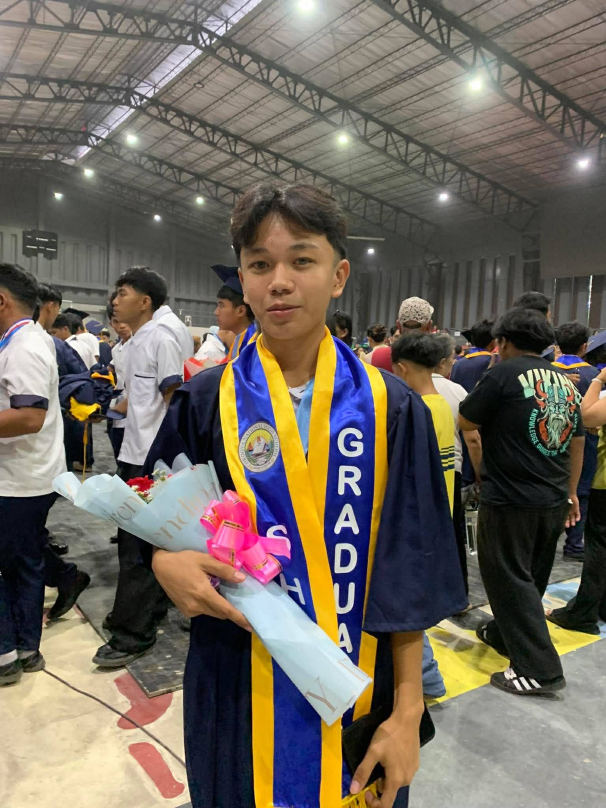

Welcome to my personal portfolio! Explore my background, skills, and projects in Information Technology.
Learn MoreHi! I'm Edizon Echivarre, an Information Technology student with an interest in computer technology, web development, and programming. I am eager to learn new skills, improve my knowledge, and gain experience in the field of technology. My goal is to become a successful IT professional and build a better future through hard work and dedication.
I have learned the basics of HTML and CSS, which allow me to create and design simple websites. Through this project, I continue to develop my creativity, technical skills, and understanding of web development.
I have gained basic knowledge of C programming, including variables, data types, conditions, and simple program structures. This project helped me understand the fundamentals of programming and improve my problem-solving skills.
Email: [Insert Email Address]
Facebook Send Email